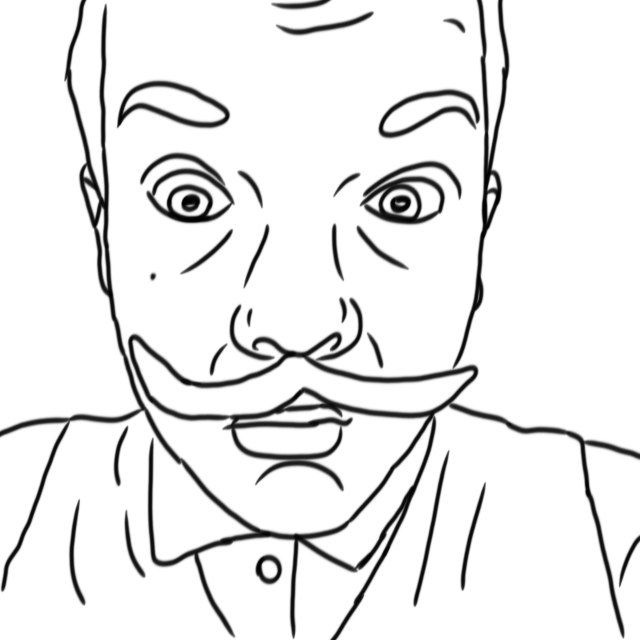

Последние статьи на Telegraph
Разведка Денисбурга рассекретила фотографии и видео с границы с Мичуринским
О нас
Мы – это первое, самое объективное и неподкупное, а также авторитетное новостное издательство Денисбурга. Мы появились 31 октября 2022 года для информирования населения Денисбурга о самых важных новостях.

Портрет президента Денисбурга